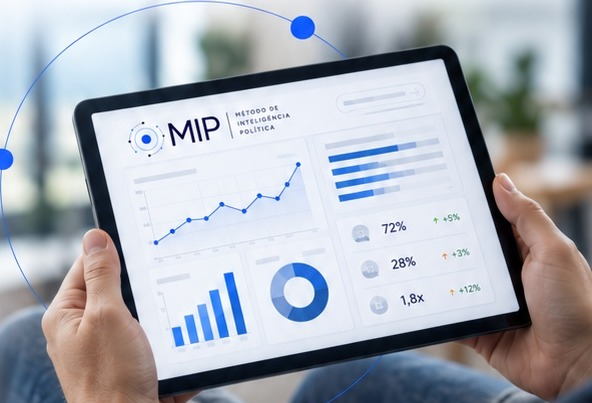

Monitoramento MIP
A plataforma de inteligência para acompanhar sua gestão, mandato ou liderança ao longo do tempo.
Pesquisas periódicas. Dados comparáveis.
Tendências. Checkpoints estratégicos.

O Monitoramento MIP reúne, em uma única plataforma, os dados das pesquisas realizadas ao longo do período.
A cada nova rodada, os resultados são comparados com os anteriores para identificar tendências, mudanças de percepção e movimentos relevantes no cenário.
Assim, você não acompanha apenas uma pesquisa isolada. Você constrói um histórico de dados sobre sua gestão, mandato ou liderança e passa a tomar decisões com mais contexto, comparação e inteligência.
Você acompanha o que está mudando antes de ser surpreendido pelo que mudou.
O que faz parte do
Monitoramento MIP
Acesso à plataforma MIP
Um ambiente exclusivo para acompanhar os dados, comparações e a evolução dos principais indicadores ao longo do tempo.
Rodadas periódicas de pesquisa
Pesquisas realizadas conforme a periodicidade definida em cada projeto, criando uma base contínua de comparação e acompanhamento.
Análise comparativa
Cada nova rodada é comparada com os resultados anteriores para identificar tendências, avanços, recuos e mudanças de percepção.
Checkpoints estratégicos
Reuniões periódicas com nossa equipe para apresentar os principais movimentos identificados, discutir os resultados e apoiar decisões e ajustes de estratégia.
Leitura de públicos e territórios
Acompanhamento das diferenças de percepção entre regiões, segmentos e públicos, permitindo identificar forças, fragilidades e oportunidades.
Histórico de evolução
Uma visão acumulada do cenário, que permite compreender não apenas como está hoje, mas como a percepção vem se transformando ao longo do tempo.